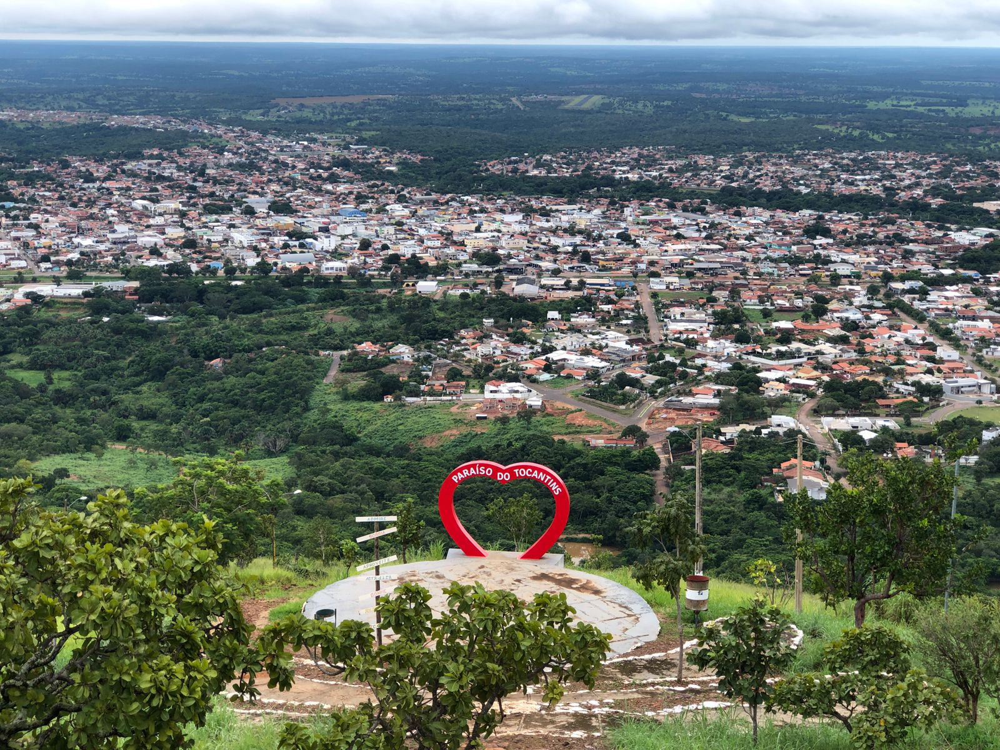

O estado do Tocantins, a unidade mais jovem do Brasil, possui uma população de cerca de 1,5 milhão de habitantes, sendo a capital Palmas a sua cidade mais populosa. Com 139 municípios, a economia do Tocantins é baseada principalmente no setor terciário, com destaque para a agricultura, pecuária e serviços. Uma curiosidade é que Palmas é a cidade planejada mais jovem do país e possui uma densidade demográfica de 135,9 hab/km², segundo o Censo 2022.
 Voltar